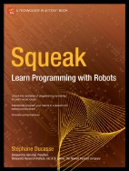

Books
Over the years I wrote the following books. I enjoyed it even if this is always more time consuming than what we would like. I also really have lot of fun writing columns because this is a completely different exercises than scientific papers.
La programmation : une approche fonctionnelle et recursive avec SchemeL. Arditi and S. Ducasse, Eyrolles, 1996.This book explains how recursion works, how do you build recursive functions in a way that you are sure that they works. The contents of this book was used in first and second year at the University of Nice-Sophia Antipolis where we had a lot of fun to teach.
Squeak: Learn programming with Robots.Stéphane Ducasse. Apress Publishers, 2005.This book teaches novices of all ages how to program. It is fun, interactive and deep. The book won the september Award of PCPlusMagazin. The first version is sold out after 4 months. A new version is under print. Check Botsinc's website. Foreword by Alan Kay the Turing award 2004 (nobel prize in computer science). Here is the book at amazon. I wish you a lot of fun with your kids... do not hesitate to share that ...


Squeak by Example.Andrew P. Black, Stéphane Ducasse, Oscar Nierstrasz and Damien Pollet.Square Bracket Associates, 2007.It is intended for both students and developers, will guide you gently through the Squeak language and environment by means of a series of examples and exercises. This book is made available under the Creative Commons Attribution-ShareAlike 3.0 license. You can either download the PDF for free, or you can buy a softcover copy from lulu.com. (You can also pay for the PDF down...
Pharo by Example.Andrew P. Black, Stéphane Ducasse, Oscar Nierstrasz and Damien Pollet.Square Bracket Associates, 2009.This book is intended for both students and developers will guide you gently through the language and environment by means of a series of examples and exercises. You can either download the PDF for free, or you can buy a softcover copy from lulu.com. (You can also pay for the PDF download from lulu.com, if you would like to make a contribution to this effort, but you are unde...


Object-Oriented Reengineering Patterns. S. Demeyer, Stéphane Ducasse, and Oscar Nierstrasz, Morgan Kaufman Publishers, 2002.This book presents reengineering patterns: recurring problems and solutions you encounter when you reengineer large systems. Migration strategies, reverse engineering patterns and reengineering patterns are presented.
Deep into Smalltalk.Alexandre Bergel, Damien Cassou, Stéphane Ducasse, Jannik Laval, Square Bracket Associates, 2013.Deep into Pharo is the second volume of a series of books covering Pharo. Whereas the first volume is intended for newcomers, this second volume covers deeper topics. It is intended for both students and developers. This book is made available under the Creative Commons Attribution-ShareAlike 3.0 license. You can either download the PDF for free, or you can buy a softcover copy...